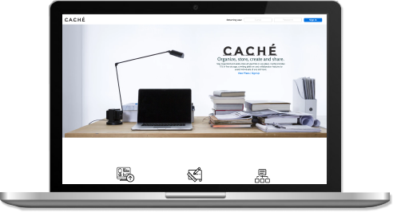
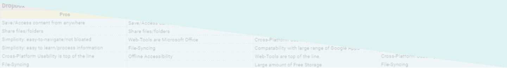

- 
As the world gets smaller, computer skills become more in demand and many users feel left behind when using these technologies.
ROLES
·UX + UI Design
·User Research
·User Testing
·Content Writing
·Visual Design
·Brand & IdentityDELIVERABLES
·Competitive Analysis
·User Surveys + Personas
·User Stories + Flows
·Visual Design
·Branding
·Wireframe Sketches
·Low + High Fidelity Mockup
·User TestingTOOLS
·Figma
·Paint Shop Pro
·Invision
·Usability Hub
·Google Forms
PROBLEM
As connections get faster and innovation continues forward, technological skills increase in demand. With progression comes many brands offering a variety of services, this results in many users feeling unskilled and left behind. Cache is a Cloud service designed specifically for users that compete with technological or resource disadvantages.
SOLUTION
Finding a niche is necessary when competing in such a crowded climate. My strategy was to find the core features that everyday users need, then offer these features in a minimal and easy-to-use interface. The scope was a Cloud that is industry standard, yet simple and efficient enough for all users; to inspire confidence navigating new technologies.
INSIGHTS
The biggest lesson learned designing Cache was the importance of intensive iteration and user testing. While deep into the project, I was met with roadblocks of spotty research and missteps. I learned to take this failure as invaluable information and a means to improve, exemplifying the importance of multiple iterations and embracing shortcomings.
- 
DISCOVERY&RESEARCH
COMPETITVE ANALYSIS
Research began with a SWOT analysis comparing leading Cloud brands. Many features shared between these brands, the most common user needs, and a MVP begin to take structure.
DROPBOX  ONEDRIVE
ONEDRIVE  GOOGLEDRIVE
GOOGLEDRIVE 
·Save + Access from any device ·Share files + folders ·File-Syncing ·Large amount of free storage ·Cross-platform usability ·Simple UI / Not bloated ·Save + Access from any device ·Share files + folders ·File-Syncing ·Large amount of free storage ·Microsoft Office Web-Tools ·Save + Access from any device ·Share files + folders ·File-Syncingn ·Large amount of free storage ·Google Web-Tools ·Industry popularity ·Cross-platform usability
INSIGHTS TO MVP
·Save + Access from any device ·Share files + folders ·Substantial free storage ·File-Syncing ·Word Processing
USER SURVEYS
Identifying these basic needs, I lanched user surveys to gain real-life data. Analyzing the results of the survey provided me with the insight on resources the everyday user needs.
Must be able to collaborate and meet with others. Be able to share, edit, and share access to files.
Need word document & spreadsheet tools. Use their Cloud for business & personal use.
USER PERSONAS
Compiling these results into real-life examples, I then built User Personas. Users of various skill level and motivations were the focus, to represent the everyday user.
Mia 32 Server/Student Cleveland, Oh
GOALS
GOALS
·Archive/Organize all her work easily in one place. ·Rid her computer of all software that can be Cloud based. ·Work 100% remotely.
MOTIVATIONS
·The ability to share and work with others efficiently and securely. ·Striving to always learn new languages and programs, ease-of-use is extremely important for her. ·Keeping all files safely stored remotely while being easily accessible has become an indespensable luxury.
FRUSTRATIONS
·Needs efficient collaboration features. ·Needs remote based Word processing tools. Fluent in Computer languages, highly values great UI and disdains a hard to use interface or a bad UX.
Arthur 21 Artist Memphis, Tn
GOALS
GOALS
·Share his work with his boss/clients. ·Store and share all the pictures and music he owns. ·Organize his vast amoutn of artistic resources
MOTIVATIONS
·Become more computer savvy to keep up with the media and art world. ·Gain more public exposure by utilizing all technological resources. ·Be able to confidently navigate new computer based technologies
FRUSTRATIONS
·Many apps are annoying and he doesn’t know why. ·Has difficulty learning new software. ·Needs a lot of free storage, but cannot afford it.
INFORMATIONARCHITECTURE
USER STORIES
Following the personas, writing the user stories helped prioritize features and identify bloat. Comparing these stories with my prior research gave the visual design a more clear hierarchy.
USER TASK PRIORITY
·As a New User ·As a New and Returning User ·As a New and Returning User ·As a New and Returning User ·As a New and Returning User ·As a New and Returning User ·As a New and Returning User
·I want a free Cloud subscription ·I want word processing programs ·I want to save + access from any device ·I want a large amount of storage space ·I want a easy-to-use UI ·I want to share files with other users ·I want a UI that is not bloated
·High ·High ·High ·High ·High ·High ·Medium
USER FLOWS + SITEMAP
A focus on minimalism, I wrote user flows to have as little movement as possible. Combining the user stories with these flows, I built a sitemap that was simple while following hierarchy based on priority.
WIREFRAME + TESTING
Structuring all the preceding research into wireframes for usability testing, they were bold and familiar, with standard shapes and sizes to feel familiar to most users.
GOALS
Launching these into usability testing, I tested 3 users to analyze my information architecture and strategy. Users were tested on abillity to [1] Sign-In & [2] Upload a file
USER 1
Beginner: Experienced directional confusion & blindly clicked on screen and asking for directions.
USER 2 + 3
Novice: Experienced similar confusion on not knowing where to click. Ultimately completing both tasks, but with some misdirection and back-tracking.
INSIGHTS
VISUALDESIGN
BRANDING
Beginning my brand’s visual design, I started with a mind-map and a moodboard to have a path for my style guide.
OURSPACE
The name “OurSpace” to represent the Cloud as accessible to everybody, while providing a place to collaborate.
TYPOGRAPHY
The font for the logo is a bold sans-serif that compliments the main typography by sharing similar features such as sharp edges, & round bowls/counters. Typography is meant to feel traditional while also having a light and playful feel.
PALETTE
To feel familiar and attractive - a bright version of a traditional red, green and blue palette. Secondary accents of white, light blue, and black
CALL TO ACTION
Calls to action being white rectangles/circles with bright red text and drop shadows.
LOGO
The logo process was full of globes and folders, to feel familiar and to represent inclusivity and accessibility. Sticking to minimalism, the logo was to look like a web-icon.
APPLICATION + TESTING
Launching the first few rounds of preference & usability testing pointed out some glaring missteps and design flaws in early iterations.
In hindsight, the intensive critique and user testing was the most influential step in this process. I received detailed, invaluable input that left me feeling lost, unsure how to move forward. My design was completely off-track visually. I created a design that was not only unattractive - but also dated, bloated and had no real structure or pattern. Understanding that failure is an invaluable lesson in design, I took this misstep as a means to improve my product and brand. As the process is never straightforward and perfect, sharing these many iterations is tantamount to showing the final product. I’ve included each frame in sequential order to guide you through these intensive iterations.
MOBILE
DESKTOP
With some peer input and evaluating my process until this point, I found where I began to stray. Thinking the simplicity would make it easy to navigate- with bold colors and style being “attractive to all”- I pigeonholed myself as I was designing with childlike ideas. In attempting to make a sleek, minimalist design - I ended up making a cartoon. These downfalls are very apparent in my initial Logo, Style Guide and Hi-Fi Mockups so I began to backtrack through each step of my research and architecture to re-evaluate my scope and strategy. Reviewing all of my research, the base was strong but the branding and application required a complete overhaul.
VISUALDESIGNCONT'D
BRANDING
Starting to revise, sticking to the idea of minimalism and familiarity, the first step was to revise the entire style guide.
CACHÉ
Changed the name to Caché. The idea was to represent storage, collaboration and accessibility for all.
TYPOGRAPHY
Add Roboto as main typography. A very simple, recognizable, and familiar.
PALETTE
Mute color palette to a mono- chromatic blue. Accents of white, grey, and black.
CALL TO ACTION
Call to Action more standard - an outline icon, and outline rectangle.
LOGO
The new logo was to be more complete and less of an icon. With the letters of Caché being part of the globe expanding toward the user- while also being individual pieces contributing to the whole. Made Western and Eastern hemisphere variations to be relative for users’ location. Logo eventually comes full circle and is finally just simplified typography.
APPLICATION
Now with a new Brand identity, intensive design iterations continue.
DESKTOP
MOBILE
In conclusion, this project has taught me invaluable lessons in the design process and the importance of intensive iteration and being able to shift gears at a moments notice. As I continue forward, to find the right collaborators and fully launch it into the public field- this project’s scope is synonymous with mine as a Designer. The purpose of providing the disadvtanged and underpriveledged users a Cloud format that is easy to learn, subsequently helping them understand and have confidence using new technological resources.
Want to Collaborate?
Reach out anytime
Designed & Developed by Joseph M. Jabkiewicz | Jabkiewicz.Design